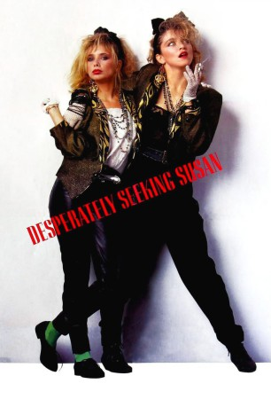
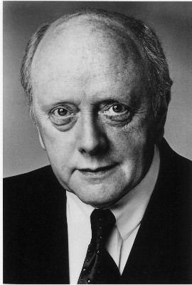
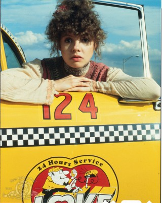
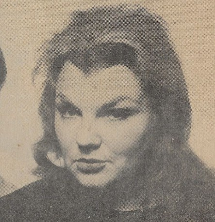
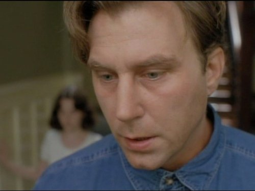

#11139 Susan... verzweifelt gesucht
Alternativ: Desperately Seeking Susan (Englischer Titel)
Auszeichnungen: 1 BAFTA-Awards gewonnen
 
 IMDB-Wertung: 5.9 / 10
IMDB-Wertung: 5.9 / 10  Metascore: 71
Metascore: 71 
In einer Kleinanzeige entdeckt die frustrierte Hausfrau Roberta den Hilferuf des jungen Musikers Jim : 'Susan... verzweifelt gesucht'. Als sich daraufhin Susan ebenfalls über eine Kleinanzeige meldet und sich mit Jim verabredet, beschließt Roberta, jene mysteriöse Susan kennen zu lernen. Voller Neugier und ihres kleinbürgerlichen Vorstadtlebens müde fährt sie nach New York und beobachtet das Treffen der beiden. Fasziniert von Susans lebendiger und extrovertierter Erscheinung, versucht Roberta zu sein wie sie. Nach einem Unfall verliert sie ihr Gedächtnis und glaubt nun tatsächlich an ihre neue Identität - mit fatalen Folgen: Killer heften sich an ihre Fersen und eine abenteuerliche Großstadt-Odyssee beginnt.
Jahr: 1985
Dauer: 99 Minuten
FSK: 12
Land: USA Studio: Orion PicturesTonspuren:
Untertitel:
Auflösung: 1080p (1920x1080) Größe: 5836 MB
Genre: Drama, Komödie
Regisseur: Susan Seidelman
Drehbuch: Leora Barish
Soundtrack: Thomas Newman
Darsteller:
 Rosanna Arquette als Roberta Glass
Rosanna Arquette als Roberta Glass Madonna als Susan
Madonna als Susan Aidan Quinn als Dez
Aidan Quinn als Dez- Mark Blum als Gary Glass
 Robert Joy als Jim
Robert Joy als Jim Laurie Metcalf als Leslie Glass
Laurie Metcalf als Leslie Glass Anna Levine als Crystal
Anna Levine als Crystal Will Patton als Wayne Nolan
Will Patton als Wayne Nolan-  Peter Maloney als Ian
 Steven Wright als Larry Stillman D.D.S
Steven Wright als Larry Stillman D.D.S John Turturro als Ray
John Turturro als Ray- Anne Carlisle als Victoria
 Giancarlo Esposito als Street Vendor
Giancarlo Esposito als Street Vendor-  Annie Golden als Band Singer
 Richard Edson als Man with Newspapers
Richard Edson als Man with Newspapers Ann Magnuson als Cigarette Girl
Ann Magnuson als Cigarette Girl- John Lurie als Neighbor Saxophonist
- Mary Joy als Cocktail Waitress
- Rosemary Hochschild als Cocktail Waitress
 Victor Argo als Sgt. Taskal
Victor Argo als Sgt. Taskal-  Shirley Stoler als Jail Matron
- Patrick John Hurley als Policeman
-  Timothy Carhart als Victoria's Boyfriend
 John Hoyt als Space Commander
John Hoyt als Space Commander- Gary Ray als Band Member
- Gary Binkow als Band Member
 Kim Chan als Park Bum
Kim Chan als Park Bum Michael Badalucco als Guy from Brooklyn
Michael Badalucco als Guy from Brooklyn- Ilene Kristen als Party Guest
- Carol Leifer als Party Guest
 Richard Portnow als Party Guest
Richard Portnow als Party Guest- Tim Ransom als Bellhop
- Sandy Dell als Hot Tub Girl (uncredited)
 Harsh Nayyar als Egyptian Diplomat (uncredited)
Harsh Nayyar als Egyptian Diplomat (uncredited)- Frank Stellato als Moving Man (uncredited)
- José Angel Santana als Boutique Owner
- Richard Hell als Bruce Meeker
- Rockets Redglare als Taxi Driver
- Steve Bosh als Newscaster
- Daisy Bradford als Daisy
- Iris Chacón als TV Singer
- J.B. Waters als Jail Matron
- Arto Lindsay als Newspaper Clerk
- Henry Adler als Magic Club Drummer
- Marty Gold als Magic Club Pianist
- Alvy West als Magic Club Saxophonist
- Michael R. Chin als Choy
- Curt Dempster als Coffee Shop Manager
- Shirley Kaplan als Waitress
- Lázaro Pérez als Enrique the Guard
Datei: X:\1985\Susan... verzweifelt gesucht (1985, FSK12, 1920x1080).mkv seit 25.04.2019
Festplatte: Gemischt-01+Anime
 Es gibt insgesamt 43 Filme in der Gruppe '1985'
Es gibt insgesamt 43 Filme in der Gruppe '1985'